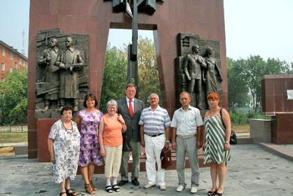
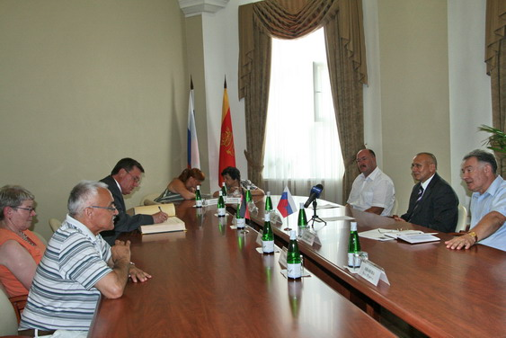
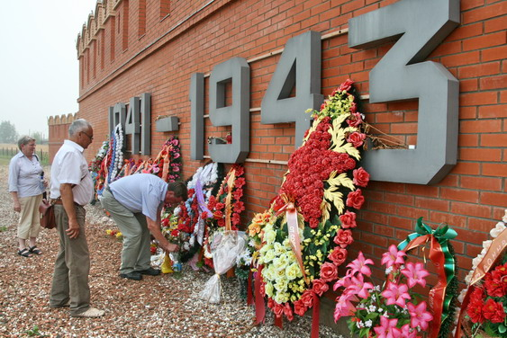
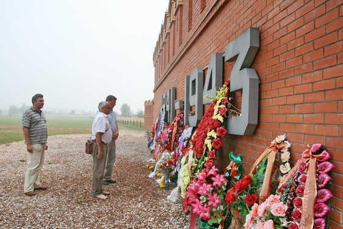
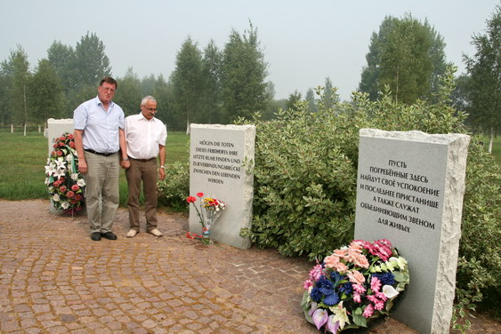
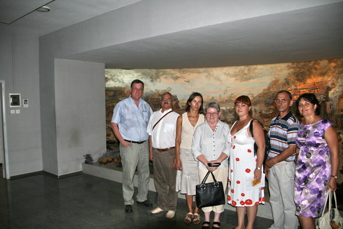

| С 6 по 9 августа 2010 г. по приглашению Фонда «Жить и Помнить» в Твери находился с визитом бургомистр города Херлесхаузен господин Гельмут Шмидт.

В 2009 году при непосредственном участии Тверского Фонда «Жить и Помнить» администрацией этого немецкого города были практически полностью восстановлены имена советских воинов захороненных на мемориальном кладбище советских военнопленных, расположенном на земле муниципалитета. На этом кладбище захоронено 45 воинов уроженцев города Калинина и Калининской области, погибших в немецком плену в 1943–1945 годах. Кладбище содержится в образцовом состоянии. Немалая заслуга в этом бургомистра города, который лично проводит работу по установлению имен захороненных, принимает приезжающих из России и республик бывшего СССР родственников.


В ходе визита г-на Г. Шмидта и его супругу принял Глава Твери В.И. Бабичев, прошли несколько рабочих встреч с сотрудниками Фонда «Жить и Помнить». Гостей познакомили с достопримечательностями Твери и Торжка, они побывали на смоленском воинском мемориале, на советском и немецком сборных воинских кладбищах в г. Ржеве. Очень сильное впечатление на гостей из Германии произвела диорама Ржевской битвы.


Все дни пребывания в Твери супруги Шмидты находились под опекой Л.А. Устиновой и семьи ее дочери И.И. Ивановой отец и дед которых похоронен на кладбище в Херлесхаузене.

|